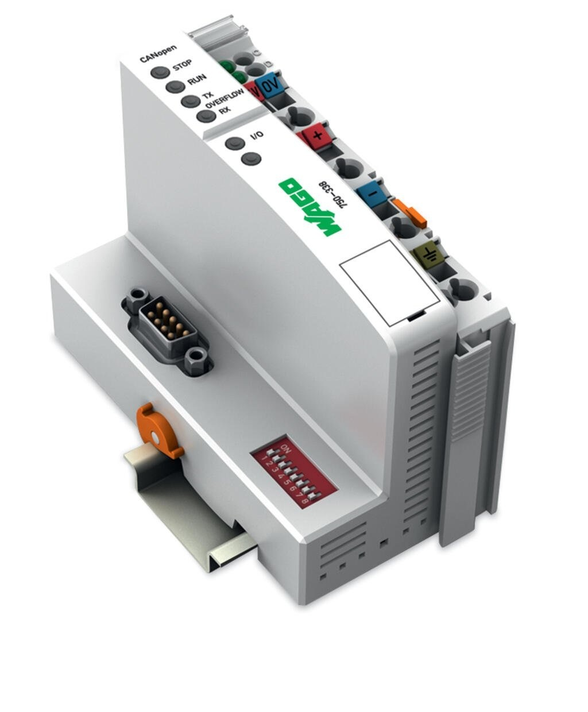
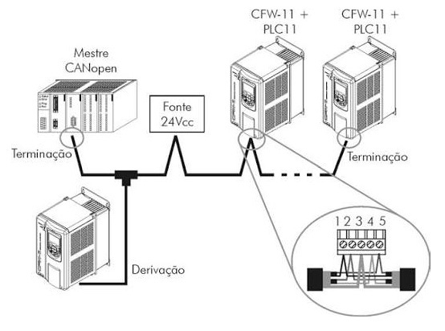

CANOPEN (PROTOCOLO INDUSTRIAL BASEADO EM CAN)
ESTRUTURA FÍSICA E CABEAMENTO
CANOPEN EM REDES DE AUTOMAÇÃO INDUSTRIAL
O CANopen é um sistema de comunicação industrial baseado no barramento CAN (Controller Area Network), utilizado para integrar controladores, módulos de entradas e saídas, sensores, acionamentos e outros dispositivos embarcados. Ele acrescenta ao CAN uma camada de aplicação padronizada, com regras para endereçamento lógico, organização dos dados, configuração dos equipamentos e gerenciamento da rede. É comum em máquinas, sistemas de movimentação, equipamentos móveis e aplicações de controle distribuído.
A arquitetura CANopen define como os dispositivos disponibilizam parâmetros e informações do processo. Dessa forma, equipamentos de fabricantes diferentes podem ser integrados quando implementam os mesmos perfis e funcionalidades compatíveis. A especificação mais conhecida para CANopen clássico é a CiA 301; CANopen FD é uma evolução separada, baseada em CAN FD e especificada pela CiA 1301.

MEIOS FÍSICOS E CABOS ADOTADOS
MEIO FÍSICO (PAR TRANÇADO DIFERENCIAL)
O CANopen clássico utiliza normalmente a camada física de alta velocidade definida pela ISO 11898-2. O meio mais comum é um cabo de par trançado, no qual os sinais CAN_H e CAN_L são transmitidos de forma diferencial. Em instalações industriais, pode ser utilizado cabo com blindagem, desde que a especificação do fabricante e o projeto de aterramento sejam respeitados. A impedância característica do cabo deve ser compatível com os componentes do barramento.
- Par de comunicação CAN_H/CAN_L: conduz os sinais diferenciais utilizados para representar os bits dominantes e recessivos do barramento.
- Condutor de referência: um condutor de referência/terra de comunicação pode acompanhar o par de dados para reduzir diferenças de potencial entre os equipamentos; sua ligação deve seguir as recomendações de instalação e de isolamento do fabricante.
- Blindagem (shield): pode ser empregada em ambientes com motores, inversores e contatores. A blindagem precisa ter continuidade e aterramento planejados, evitando conexões improvisadas que criem correntes indesejadas.
TOPOLOGIA DO BARRAMENTO E TERMINAÇÃO
A topologia recomendada para CANopen é a de barramento linear: um cabo principal percorre a instalação e cada nó é conectado a ele por derivações curtas (stubs). A formação de grandes ramificações em estrela aumenta as reflexões do sinal e pode comprometer a comunicação, principalmente em taxas elevadas.
- Resistores de terminação: em uma rede CAN de alta velocidade, normalmente são instalados resistores de 120 Ω entre CAN_H e CAN_L nas duas extremidades físicas do cabo principal. Não se deve instalar uma terminação em cada nó; somente nas duas pontas do barramento.
- Derivações: devem ser mantidas curtas e distribuídas ao longo do cabo principal. O comprimento admissível diminui conforme a taxa de transmissão aumenta.
- Expansão da rede: o número de nós depende dos transceptores, da carga elétrica total, do cabeamento e das regras de projeto. Repetidores ou bridges apropriados podem ser usados quando a arquitetura exigir a extensão ou o isolamento de segmentos.
CONECTORES PADRONIZADOS E IDENTIFICAÇÃO
O CANopen não depende de um único formato físico de conector para todas as aplicações. As recomendações de pinagem para interfaces CAN são tratadas em documentos da CAN in Automation (CiA), incluindo a CiA 106, que reúne atribuições para diferentes tipos de conectores. A compatibilidade exige conferir o padrão de pinagem do equipamento e do cabo, não apenas o formato mecânico.
- DE-9 / D-Sub de 9 pinos: conector bastante encontrado em interfaces CAN e equipamentos de automação. A distribuição dos pinos deve seguir a recomendação adotada pelo fabricante e pela aplicação.
- M12 industrial: conector circular rosqueado utilizado em determinados equipamentos e instalações industriais, com codificação e pinagem próprias para a interface CAN.
- Bornes e conectores plugáveis: alguns controladores e módulos utilizam terminais removíveis para CAN_H, CAN_L, referência e, quando previsto, blindagem ou alimentação auxiliar.
- Identificação dos condutores: os sinais principais são identificados como CAN_H e CAN_L. A posição dos pinos de referência, blindagem e alimentação pode variar entre famílias de conectores e deve ser confirmada na documentação técnica.
TOPOLOGIAS SUPORTADAS
A topologia física de referência é o barramento linear com terminação nas duas extremidades. Outras configurações podem ser possíveis com repetidores, bridges ou componentes específicos, mas não devem ser tratadas como equivalentes ao barramento linear sem avaliação elétrica.

- Barramento linear (bus): é a solução preferencial, com um tronco principal e derivações curtas para os dispositivos.
- Estrela ou árvore: ramificações extensas e múltiplos pontos de junção não são recomendados para o CAN de alta velocidade convencional, pois dificultam o controle das reflexões. Uma topologia desse tipo só deve ser empregada com componentes e limites explicitamente previstos no projeto.
- Redundância: a rede CANopen clássica não oferece, por si só, um anel redundante padronizado. A disponibilidade deve ser tratada por arquitetura do equipamento, redes independentes ou soluções adicionais.
INTERFACE ELÉTRICA E TRANSMISSÃO DE SINAIS
SINALIZAÇÃO E NÍVEIS ELÉTRICOS NO BARRAMENTO CAN
A transmissão ocorre por sinalização diferencial. O transceptor compara a diferença de tensão entre CAN_H e CAN_L, em vez de utilizar apenas a tensão de um condutor em relação ao terra. No estado recessivo, os dois fios apresentam níveis próximos; no estado dominante, CAN_H sobe e CAN_L desce, produzindo uma diferença de tensão reconhecível pelos demais nós. Os valores exatos dependem do transceptor e da camada física ISO 11898-2.
- Bit dominante: representa o estado lógico que prevalece no barramento quando é transmitido simultaneamente com um bit recessivo. Esse comportamento também permite a arbitragem não destrutiva do CAN.
- Bit recessivo: corresponde ao estado em que o barramento não é forçado para o nível dominante. Um nó que transmite um bit recessivo e observa um bit dominante sabe que outro nó possui prioridade de transmissão.
- Codificação NRZ: o CAN utiliza codificação Non-Return-to-Zero. Para manter a sincronização, aplica-se bit stuffing em sequências longas de bits iguais, conforme as regras do protocolo CAN.
ALIMENTAÇÃO PELO BARRAMENTO
O CANopen não define a alimentação dos sensores, atuadores ou controladores pelo próprio par de comunicação. Em regra, os equipamentos recebem energia por uma infraestrutura separada, frequentemente em 24 Vcc nas instalações industriais. Alguns conectores CAN podem possuir pinos adicionais para alimentação, mas isso não significa que o barramento CAN forneça energia de forma padronizada aos dispositivos.
- Alimentação dos dispositivos: fontes CC, distribuidores de energia ou circuitos locais alimentam controladores, sensores, módulos e atuadores de acordo com seus requisitos.
- Separação entre dados e energia: CAN_H e CAN_L são dedicados à comunicação. A alimentação, quando conduzida no mesmo conector, utiliza contatos distintos e deve respeitar corrente, proteção e pinagem especificadas pelo fabricante.
ISOLAÇÃO E PROTEÇÃO CONTRA RUÍDOS
A sinalização diferencial torna o CAN mais resistente a ruídos comuns aos dois condutores, mas não elimina a necessidade de instalação correta. Em máquinas industriais, interferências podem ser produzidas por inversores de frequência, motores, contatores, fontes chaveadas e cabos de potência.
- Cabo adequado: utilizar par trançado compatível com a camada física CAN e, quando necessário, versão blindada adequada ao ambiente.
- Aterramento e referência: seguir o esquema de ligação recomendado pelo fabricante, manter equipotencialização adequada e evitar caminhos de corrente de blindagem não planejados.
- Terminação correta: instalar as terminações nas extremidades do barramento, com valor compatível com a impedância do cabo, reduzindo reflexões que podem ser confundidas com ruído.
- Isolação galvânica: interfaces isoladas podem proteger equipamentos contra diferenças de potencial e transitórios entre segmentos, mas não substituem o dimensionamento correto do cabo, das terminações e do aterramento.
PROTOCOLO DE ENLACE E ACESSO AO MEIO (MAC)
MÉTODO DE ACESSO AO MEIO NA REDE CANOPEN
ARBITRAGEM NÃO DESTRUTIVA DO CAN
O acesso ao meio é controlado pelo mecanismo de arbitragem bit a bit do CAN. Quando o barramento está livre, mais de um nó pode iniciar a transmissão. Cada transmissor compara o bit que envia com o nível observado no barramento. Se transmitir um bit recessivo e detectar um dominante, interrompe sua transmissão e passa a receber o quadro que possui maior prioridade. Como a arbitragem ocorre no próprio campo de identificador, o quadro vencedor não é corrompido.
- Prioridade pelo identificador: no formato básico de 11 bits, identificadores numericamente menores possuem maior prioridade de arbitragem, pois apresentam primeiro a sequência dominante que prevalece sobre os bits recessivos.
- Compartilhamento do barramento: todos os nós observam o tráfego do mesmo meio físico; a arbitragem organiza quem transmite sem exigir que um controlador central autorize cada quadro.
GERENCIAMENTO DE REDE E ORGANIZAÇÃO DAS MENSAGENS
O CANopen acrescenta funções de gerenciamento ao mecanismo de acesso do CAN. O NMT (Network Management) permite controlar estados dos dispositivos, como Inicialização, Pré-operacional, Operacional e Parado. O gerenciamento NMT pode ser centralizado por um nó mestre, mas a troca de dados de processo não depende de uma sequência de consulta mestre-escravo para cada mensagem.
- COB-ID: identifica os objetos de comunicação CANopen no barramento e participa da definição de sua prioridade. Em CANopen clássico, os identificadores predefinidos normalmente utilizam o formato CAN de 11 bits.
- Comunicação produtor-consumidor: um dispositivo pode produzir uma mensagem que será recebida por um ou mais nós interessados, de acordo com a configuração dos objetos de comunicação.
ESTRUTURA DO QUADRO E MENSAGEM CANOPEN
O CANopen utiliza quadros de dados do protocolo CAN para transportar objetos de comunicação. A estrutura do quadro é definida pela camada de enlace CAN; o significado dos dados transportados é determinado pelas regras de CANopen, incluindo identificadores de objetos de comunicação e o dicionário de objetos.
CAMPOS PRINCIPAIS DO QUADRO CAN CLÁSSICO
- SOF (Start of Frame): bit que marca o início do quadro e permite que os nós iniciem a sincronização da transmissão.
- Campo de arbitragem: contém o identificador CAN e os bits de controle associados. O identificador participa da arbitragem e indica a prioridade do quadro.
- Campo de controle e DLC: apresenta informações de controle e o Data Length Code, que indica a quantidade de bytes no campo de dados.
- Campo de dados (Data Field): transporta o conteúdo da mensagem. No CAN clássico, o campo de dados comporta até 8 bytes por quadro.
- CRC (Cyclic Redundancy Check): permite detectar erros no quadro recebido por meio de uma sequência de verificação calculada pelo transmissor e conferida pelo receptor.
- ACK (Acknowledgement): é utilizado para indicar que pelo menos um nó recebeu o quadro sem detectar erro, conforme as regras do CAN.
- EOF (End of Frame): sequência que indica o encerramento do quadro CAN.
OBJETOS DE COMUNICAÇÃO DO CANOPEN
O CANopen organiza os dados por meio de objetos de comunicação (COBs) e de um dicionário de objetos. O dicionário reúne parâmetros de comunicação e de aplicação, identificados por índice de 16 bits e subíndice quando necessário. Essa organização padroniza a configuração e o acesso às informações internas do dispositivo.
- PDO (Process Data Object): transporta dados de processo, como valores de sensores, estados de entradas e comandos de saída. É utilizado para comunicação rápida e pode ser configurado para transmissão síncrona, cíclica, por evento ou mediante solicitação, conforme o perfil e o equipamento.
- SDO (Service Data Object): permite ler e escrever entradas do dicionário de objetos, sendo utilizado principalmente para parametrização, configuração e diagnóstico. O modelo de comunicação é cliente-servidor.
- NMT (Network Management): gerencia os estados de comunicação dos nós e participa da inicialização e do controle operacional da rede.
- SYNC e TIME: o SYNC pode sincronizar ações e transmissões relacionadas ao ciclo da rede; o TIME distribui informações de data e horário quando implementado.
- EMCY (Emergency): comunica condições de erro ou emergência detectadas pelo dispositivo, permitindo que os demais participantes sejam informados rapidamente.
- Heartbeat e Node Guarding: são mecanismos de monitoramento da disponibilidade e do estado dos nós. A utilização depende da configuração e das capacidades implementadas.
VERIFICAÇÃO DE ERROS E ESTADOS DE FALHA
A camada CAN possui mecanismos de detecção de erros, como verificação de CRC, monitoramento de bits, verificação de formato e bit stuffing. Quando identifica uma falha, o controlador pode emitir um quadro de erro e realizar nova tentativa de transmissão, conforme o estado do controlador e as regras do CAN. O mecanismo de confinamento de erros classifica os nós como Error Active, Error Passive ou Bus Off, limitando a participação de um nó que apresenta falhas repetidas.
PARÂMETROS OPERACIONAIS E DESEMPENHO
TAXA DE TRANSMISSÃO (BIT RATE / BAUD RATE)
No CANopen clássico (CANopen CC), as taxas de transmissão padronizadas vão de 10 kbit/s a 1 Mbit/s. A taxa é configurada para todos os nós de um mesmo segmento e precisa ser compatível com os equipamentos conectados. A velocidade efetiva e a confiabilidade dependem do comprimento do cabo, das derivações, dos transceptores e da qualidade da instalação.
TAXAS DE TRANSMISSÃO USUAIS
- 1 Mbit/s: utilizado em redes curtas e com requisitos elevados de atualização; a CiA indica comprimento de barramento de referência de 25 m.
- 500 kbit/s: permite comprimento de referência de até 100 m, sendo uma taxa comum em máquinas e sistemas compactos.
- 250 kbit/s: pode alcançar cerca de 250 m em condições compatíveis com as recomendações de temporização e cabeamento.
- 125 kbit/s: pode alcançar cerca de 500 m e é útil quando a extensão do barramento exige reduzir a taxa de transmissão.
- 50 kbit/s: pode alcançar cerca de 1.000 m em condições adequadas de instalação.
- 10 a 20 kbit/s: são taxas de menor velocidade que podem ser utilizadas em redes extensas. Como referência, 10 kbit/s pode alcançar até 5.000 m e 20 kbit/s até 2.500 m, conforme as condições de cabeamento e temporização.
Os valores são referências técnicas para CANopen CC e não devem ser utilizados como garantia automática de alcance. O projeto deve respeitar a tabela completa de temporização, o limite de derivações, as características do cabo e os requisitos de cada transceptor. CANopen FD é uma variante distinta e não deve ser confundida com os limites do CANopen clássico.
DISTÂNCIA MÁXIMA DO BARRAMENTO
A distância máxima não é fixa: ela diminui à medida que a taxa de transmissão aumenta. A tabela técnica da CiA apresenta, como referências para CANopen CC, aproximadamente 25 m a 1 Mbit/s, 100 m a 500 kbit/s, 250 m a 250 kbit/s, 500 m a 125 kbit/s e 1.000 m a 50 kbit/s. Para taxas menores, o alcance de referência pode chegar a alguns quilômetros.
Além do comprimento total, devem ser observados o comprimento individual e acumulado das derivações, a posição das terminações, a impedância do cabo, a queda de tensão e o atraso de propagação. Repetidores ou bridges podem ser necessários para interligar segmentos adicionais, respeitando as limitações da arquitetura.
DETERMINISMO E TEMPO DE CICLO
- Classificação:CANopen pode oferecer comportamento previsível para aplicações de controle cíclico quando a rede é corretamente dimensionada e configurada, sendo condicionalmente determinístico, mas o tempo de resposta não é automaticamente garantido apenas pelo uso do protocolo.
- Justificativa: a arbitragem por identificador define prioridades e permite calcular tempos de transmissão em função da carga do barramento. Mensagens de maior prioridade podem acessar o meio antes das de menor prioridade. Entretanto, o tempo de ciclo depende da taxa configurada, do número de nós, do volume de mensagens, da prioridade dos COB-IDs, das retransmissões e das falhas de comunicação.
- Aplicação: é apropriado para troca de dados de controle entre controladores, acionamentos e módulos distribuídos, desde que os requisitos de tempo real sejam verificados por análise de carga e projeto da rede.
NÍVEL NA PIRÂMIDE DA AUTOMAÇÃO
- Classificação: atua principalmente nos níveis de Sensores e Atuadores (Nível 1) e de Controle (Nível 2) da pirâmide da automação.
- Justificativa: o CANopen conecta dispositivos de campo, módulos de I/O, inversores, servodrives, sensores e controladores. Os dados podem ser encaminhados a sistemas de supervisão por meio de PLCs, gateways ou interfaces de comunicação, mas o CANopen é mais diretamente associado à comunicação de dispositivos e ao controle local da máquina.